Generating and editing images with a pretrained flow model, then training my own on MNIST.
This project explores a generative modeling technique called flow matching. Flow matching is a technique to generate images from noise by modeling not individual denoising steps, but a velocity in image space, and integrating across it to produce an image output. Part A involves me using a pretrained text-to-image flow model, and part B involves me training my own UNet flow model on MNIST for digit generation.
For this part, we will be using the pre-trained flow model PixNerd-XXL-P16-T21 which outputs 512x512 images; we use it solely for inference, not any training. We start off by visualizing sampling, then move onto conditional generation, and finally cover a few creative applications we can do with our flow model
The model that we are using embeds textual prompts into embeddings using Qwen3 as generative input or conditioning. We preprocess every image by cropping to its center, resizing it to 512x512 pixels, scaling every channel to [-1, 1]. We use random seed 180.
Quick setup for everything in this part: flow matching draws a straight line between pure noise x_0 and a clean image x_1, so x_t = (1 - t) * x_0 + t * x_1, where t = 0 is pure noise and t = 1 is the clean image. The model is trained to predict the velocity along that line (x_1 - x_0), and to generate an image we start from noise and integrate that velocity up to t = 1.
We build a noisy input by taking a linear interpolation between the clean image and a Gaussian noise sample epsilon: that is, we do (1 - t) * epsilon + t * image. In these results, the same noise tensor is used for every single timestep. For my image, I chose a Berkeley city sunset (probably the best Berkeley late sunset pic I have)
def interpolate(image, noise, t):
return t * image + (1-t) * noise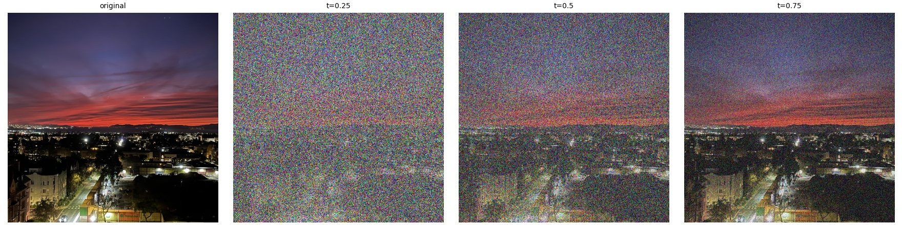
observation: as you can see, as t decreases, less and less of the image survives the noising.
For a baseline, we ran classical denoising. We first rescale every single noisy input by 1/t to restore the original amplitude (recall what we did in our interpolation), and then do a gaussian blur with an appropriate value of sigma. We try out several values of sigma like 1, 2, 4, 8, 16, and keep the one that is closest to the original image (in MSE). I used a kernel size of 3 * sigma + 1, and the sigmas for each noise level are stated in the image below.
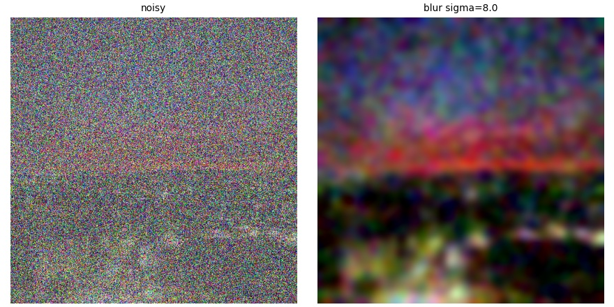
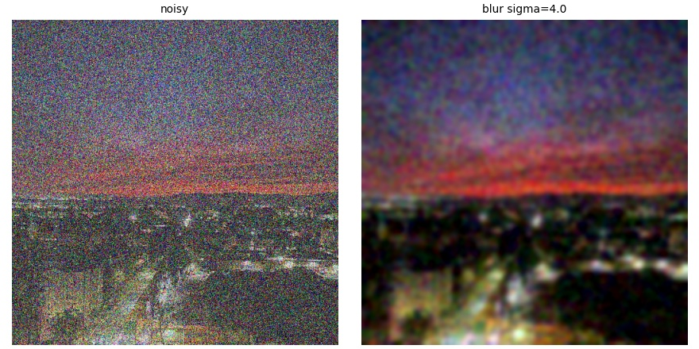
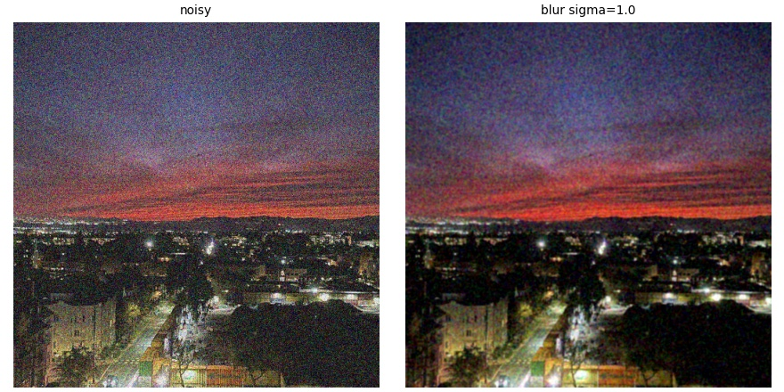
I noticed that more noisy inputs needed more blur, which makes sense, as a noisier image will only look the same after averaging over a lot larger space.
Another method that I tried was what could essentially be called “one-step” denoising. We predict the velocity of a noised image once, and extrapolate this velocity to the clean endpoint. When predicting the velocity, we use the prompt “a high quality photo” so that it tries to maximally get rid of noise while not injecting any other details of its own.
def one_step_denoise(x, t, condition, predict_velocity):
return x + (1-t) * predict_velocity(x, t, condition)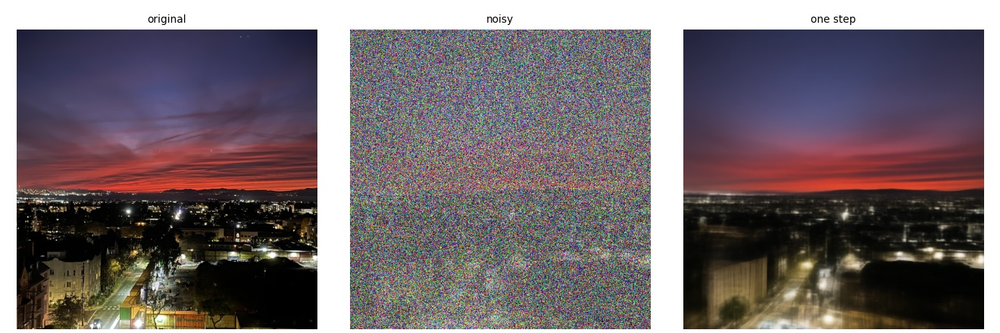
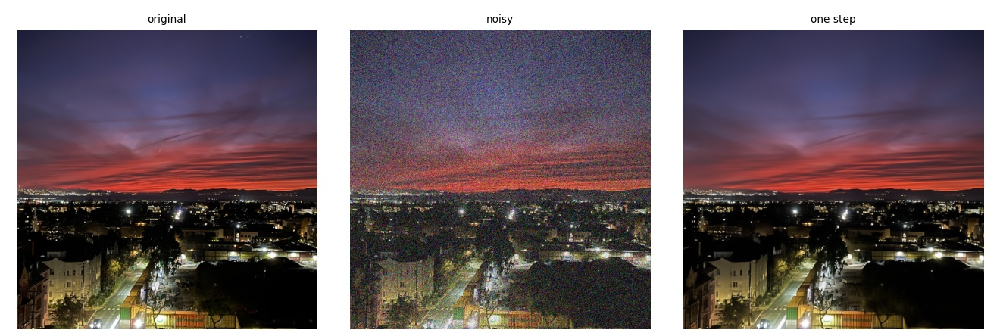
Just applying one step of this type of denoising does a lot better than classical denoising. The quality (as in, how faithful it is to the original image) decreases as t is smaller, but it still produces a “clean” image regardless, as in it’s not blurry; it’s just that it becomes less and less accurate to the original images that we had as there’s more noise.
Now, we compare the difference between the model’s predicted velocity at stepping between images, versus the ground truth velocity (just the difference between the two images). We visualize the error on a symmetric RGB scale (that is, zero is a mid-gray color). The error shown is just the RMS over all 3 channels (RGB) per-pixel, of the normalized difference in velocity (1-t)(v_pred - v_gtruth), shown on an absolute scale from 0 to unbounded (so we use the maximum across the all the images)
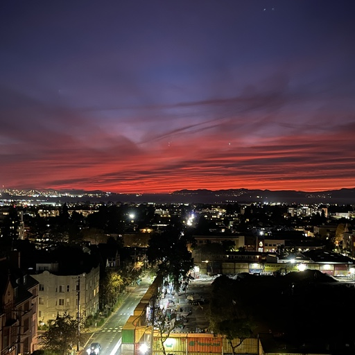
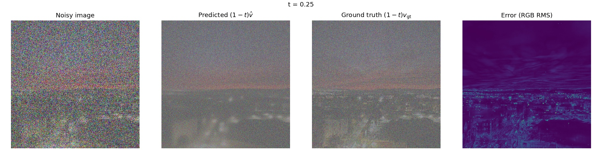
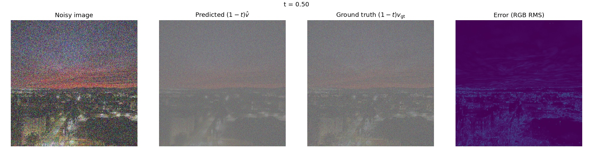
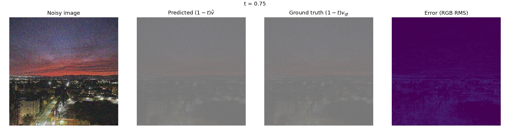
As you can see, the predicted and ground truth differ the most on edges, very bright spots, and very fine textures. The error gradually decreases as we get to higher timesteps, with it almost vanishing at the last timestep.
Earlier, we tried out one-step denoising, and although it worked pretty well, it approximates the flow path with a straight line. This is slightly incorrect because the velocity changes at every single step. The correct solution is something called Euler integration, where we take a small velocity step, recalculate the velocity, and apply it again. For these examples, we start from the saved t = 0.5 input, with velocity 0.02 (so 25 updates). In the general case, we shorten the last step so it ends at 1.
@torch.inference_mode()
def euler_sample(x_start, t_start, step_size, velocity):
x = x_start
t = t_start
states = []
states.append((t, x))
while t < 1.0 - 1e-6:
if t + step_size > 1.0 - 1e-6:
h = 1.0 - t
else:
h = step_size
x = x + h * velocity(x, t)
t += h
states.append((t, x))
return x, states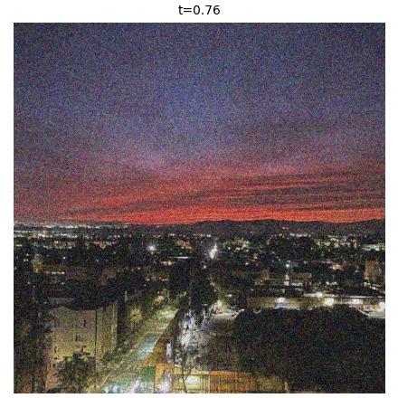
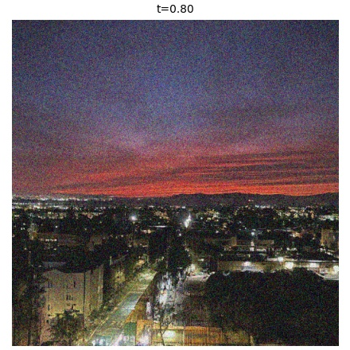
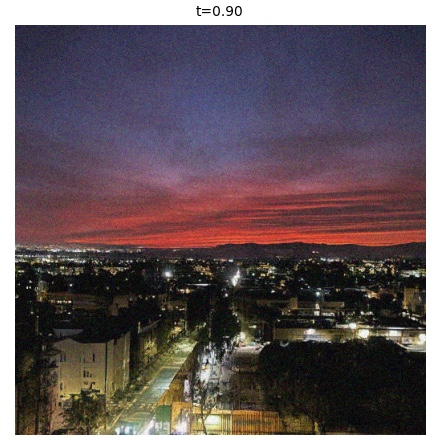
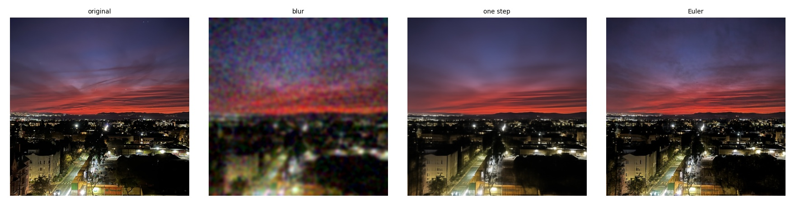
Blur is clearly the worst; the colors are right but everything is smeared. One-step and Euler both look really close to the original at this noise level, with Euler having a bit more texture in the clouds. Funnily enough, one-step actually has the lower MSE (0.0127 vs 0.0154 for Euler, and 0.0302 for blur). I think this is because one step predicts roughly the average of all the images that could have produced this input, which is exactly what MSE rewards, while Euler commits to specific details that don’t line up pixel for pixel with my photo.
Here are some examples starting from pure Gaussian noise; we start Euler sampling from t=0 and tell it to produce a “high quality photo” with no guidance. We used seeds 180-184.
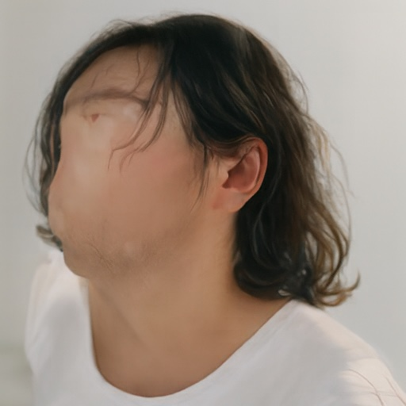
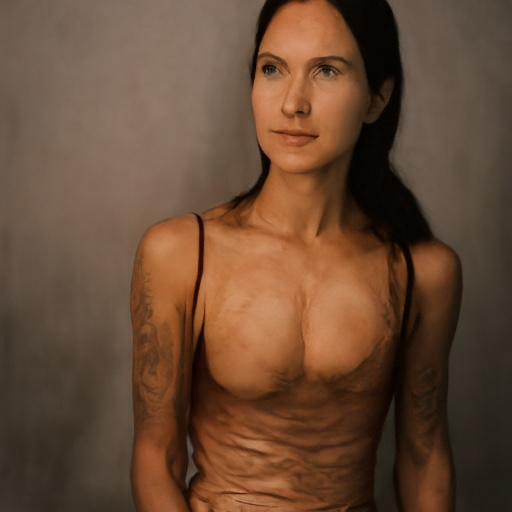
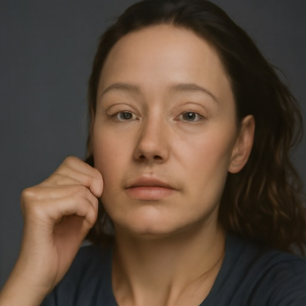
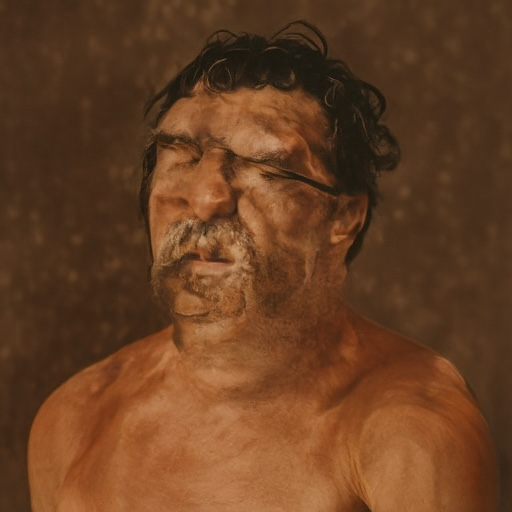
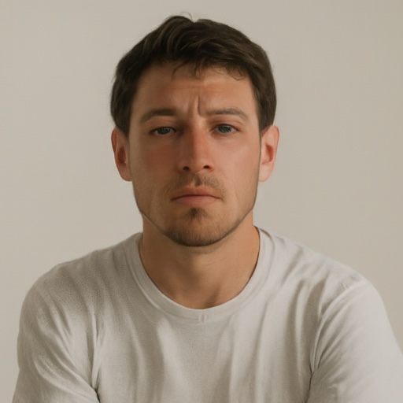
Even though we do not give any hard guidance in the prompt, it can clearly be seen that it is biased towards pictures / portraits, which is likely closest to the “mean” image (at least under “high quality image”) that it has learned. Additionally, the pictures seem kinda fuzzy and seem to be blending quite a few features together.
Conditional generation means that you use some additional piece of information as “conditioning” such as a text prompt; this section focuses on 1 form of strengthening it.
Classifier-free guidance is a technique to “guide” flow models for better conditional outputs. You essentially run the model forward once with the condition and once without the condition, giving you the conditional velocity v_c and unconditional v_u. You then get the velocity to move from unconditional to conditional, v_c - v_u, and add it to your base velocity with some multiplier: v_c + w(v_c - v_u). This essentially lets you move more in the direction of conditioning. We use w = 7, h = 0.02, and the same initial noises as the previous part.
def cfg_velocity(x, t, condition, w, predict_velocity, null_condition=''):
vc = predict_velocity(x, t, condition)
vu = predict_velocity(x, t, null_condition)
return vc + w * (vc - vu)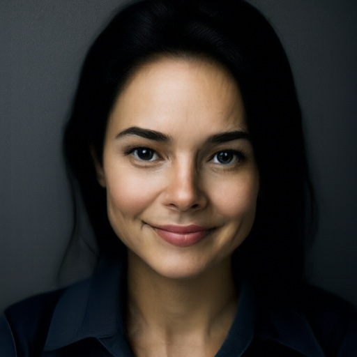
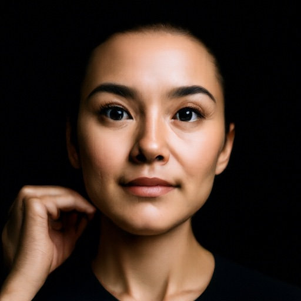
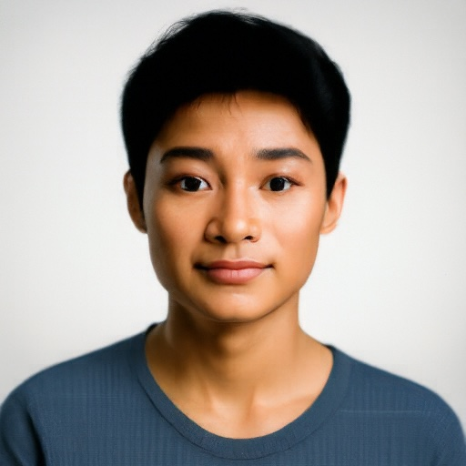
The guided samples are a lot more high-quality and have finer features than the previous unguided ones. The faces are correctly formed, but the images might be even lower-diversity now, as they are all just straight portraits with the same angle, centering, etc.
Since Euler sampling can start from any t, we can do more than just denoise: we can edit real images and make optical illusions. Everything here uses h = 0.02, w = 7, and the empty prompt “” for the unconditional branch.
To allow producing images from images, we first noise a real image as if it were being noised up to some starting time t, using the interpolation function, and then Euler sample with CFG and the same “high quality photo” prompt back to time=1. The model makes back whatever the noise destroyed: the smaller the starting time, the bigger the edit will be. I used starting times 0.02, 0.04, 0.06, 0.10, 0.14, 0.25, and 0.50 with the same noise.
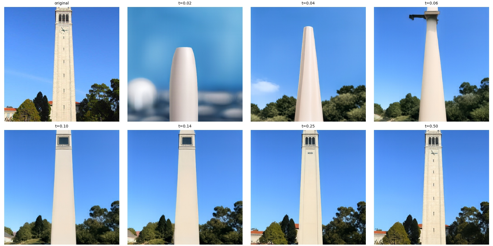
As you can see, as time gets higher, more and more of the image survives: at 0.02 only a white vertical shape on blue is left, and the model turns it into what looks like a product shot of a white pillar, while at 0.50 it’s pretty much the original Campanile.
This is the same Berkeley sunset from part 1.
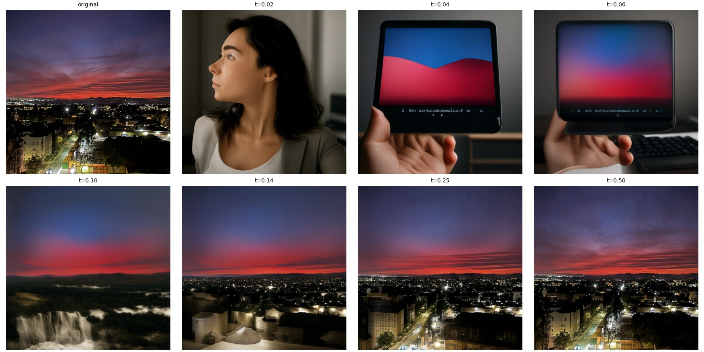
At 0.02 it turned into a portrait of a woman (the portrait bias from 1.6 again), and at 0.04 and 0.06 it became a hand holding a tablet that keeps the sunset’s red and blue. At 0.10 the city turned into a waterfall, and from 0.14 on it’s a sunset over a city again, getting closer to my photo each time.
This is a picture of Rio de Janeiro.
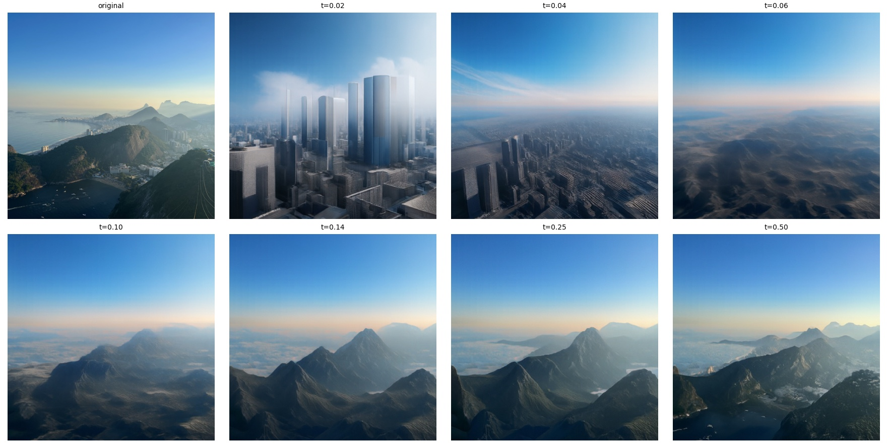
At 0.02 and 0.04 the model made a whole city out of it (skyscrapers in the clouds, then an aerial view of a city). From 0.06 to 0.25 it’s a hazy aerial shot of mountains that gets closer to the original layout each time, and at 0.50 the mountains and coastline match pretty well, but most of the buildings are gone.
This works especially well on things that aren’t real photos, like pixel art or drawings, because the editing process forces them onto the manifold of natural images and makes them more realistic. The preprocessing center-crops to a square, so I kept my drawings in the middle of the canvas.
I used a pixel art city skyline (from Deltarune).
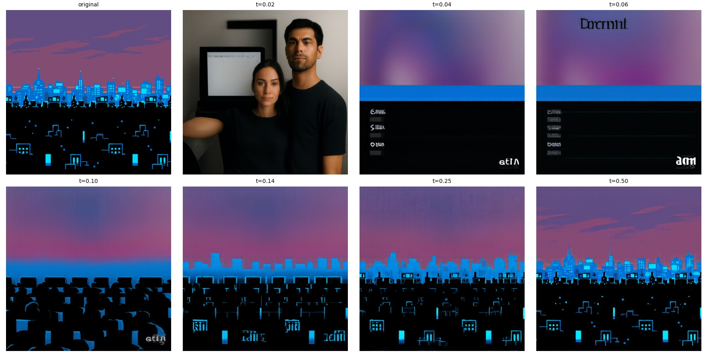
At 0.02 there’s nothing left of the pixel art and the model makes a photo of two people in front of a monitor. At 0.04 and 0.06 it reads the flat color bands as some kind of screen, complete with gibberish text. The skyline comes back at 0.10 as solid silhouettes, gets its windows at 0.14, and by 0.25 it’s pixel art again.
My first drawing is a slice of pepperoni pizza on a plate.
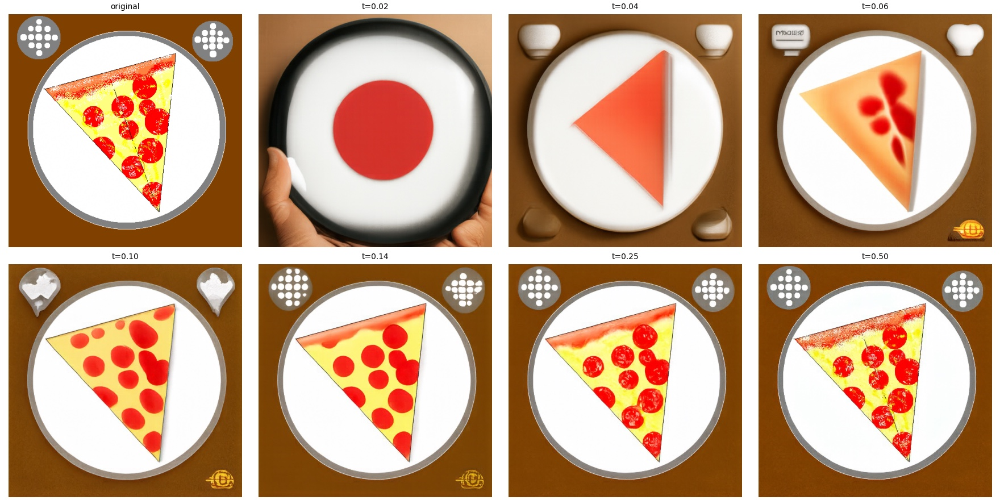
At 0.02 the model only sees a red circle on a white plate and makes a photo of someone holding exactly that. At 0.04 the slice is a plain orange triangle, at 0.06 it’s a blurry but real-looking slice, and at 0.10 it’s a cartoony pizza. From 0.14 on it’s basically my drawing.
My second drawing is a striped fish in the ocean with some bubbles.
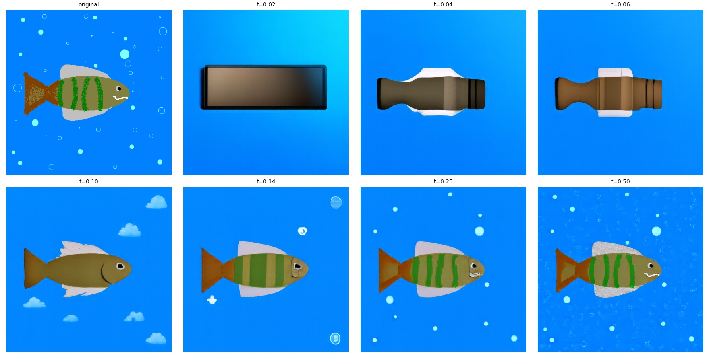
This one was kinda weird: at 0.02 the fish became a dark rectangle, and at 0.04 and 0.06 a bottle lying sideways (which honestly has about the same shape). At 0.10 it’s a pretty realistic fish with the bubbles turned into clouds, the stripes come back at 0.14, and by 0.25 it’s the same as my drawing.
This is the same procedure as 3.1, except instead of “a high quality photo” we condition on a prompt describing the edit we want. At low starting times the prompt basically takes over, and at high starting times the original structure wins.
Prompt: “A birthday cake with a single tall lit candle”
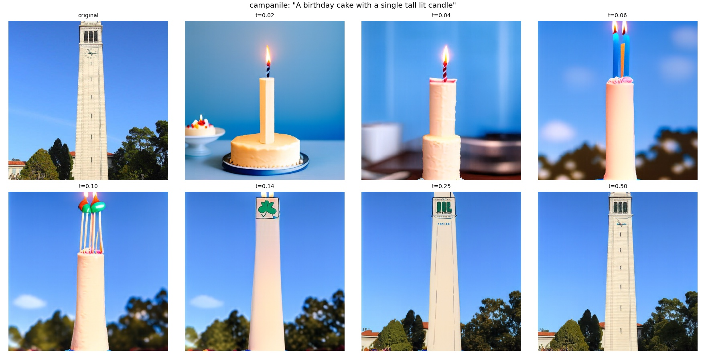
At 0.02 it’s just a birthday cake, no Campanile at all. From 0.04 to 0.10, the tower itself becomes a tall frosted cake with candles on top while keeping the Campanile’s shape and the sky and trees behind it. By 0.25 it’s a tower again with some odd green decorations, and 0.50 is just the Campanile.
My sunset photo, with the prompt “A neon, hyper-futuristic city at sunset time”.
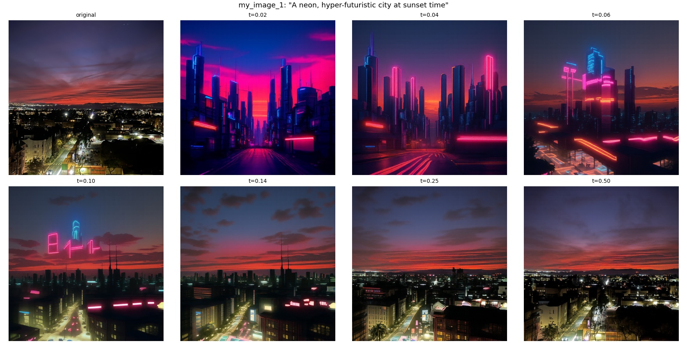
At 0.02 and 0.04 it’s a full neon city that keeps the sunset’s pink and blue. At 0.06 neon towers sit on top of my skyline, and at 0.10 it’s my photo with neon signs floating in the sky, which is probably my favorite. Past 0.14 the neon mostly goes away.
The Rio picture, with the prompt “Snowy mountains above a frozen lake”.
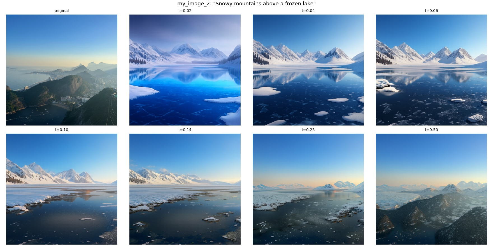
This prompt fit pretty well since the original already has mountains and water. From 0.02 to 0.06 it’s snowy mountains reflected in a frozen lake, at 0.10 and 0.14 the layout shifts toward the original, and by 0.50 the original mountains are back with just some snow on the far peaks.
A visual anagram looks like one thing upright and something else upside down. At each Euler step, we get the CFG velocity of the image with the first prompt, and the CFG velocity of the image rotated 180° with the second prompt (rotated back afterwards). We step with the average of the two, so the final image has to satisfy both prompts, one in each orientation. I used seeds 182 and 183.
def visual_anagrams(noise, condition_a, condition_b, predict_velocity, w=7, step_size=0.02):
def velocity(x, t):
v1 = cfg_velocity(x, t, condition_a, w, predict_velocity, null_condition)
v2 = cfg_velocity(rotate180(x), t, condition_b, w, predict_velocity, null_condition)
return (v1 + rotate180(v2)) / 2
x, states = euler_sample(noise, 0.0, step_size, velocity)
return xUpright: “an oil painting of a forest” · Rotated 180°: “an oil painting of an owl”
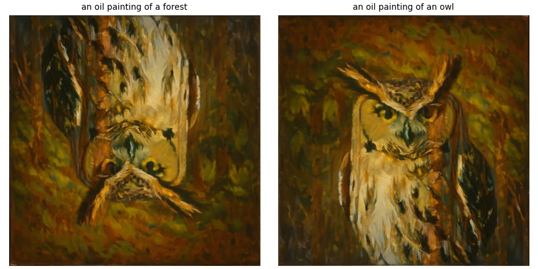
Upright: “a lithograph of a cow” · Rotated 180°: “a lithograph of a snowy mountain”
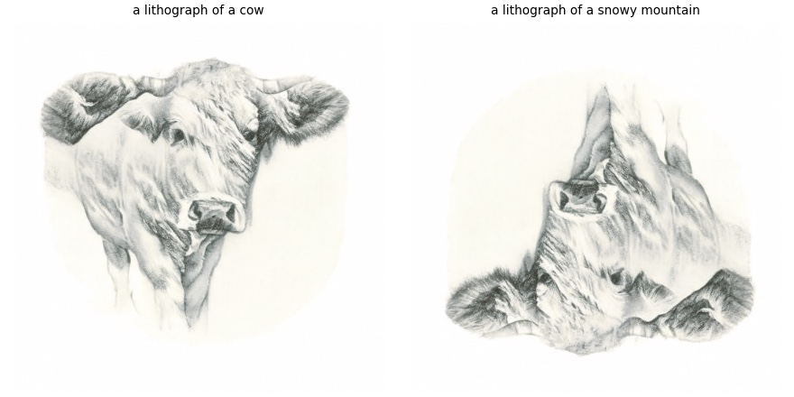
Using the same style for both prompts helps, since both views can share colors and brush strokes. I think the cow one works better: the cow is really clear upright, and flipped over its ears and head turn into the base and peak of a mountain. The owl one is lopsided; the owl is obvious when rotated, but the upright view still mostly looks like an upside-down owl in a forest.
This works like the hybrid images in project 2, except we combine velocities instead of images. At each step we get the CFG velocity for two prompts and add the low frequencies of the first to the high frequencies of the second: lowpass(v1) + (v2 - lowpass(v2)), where the low-pass is a Gaussian blur with kernel size 265 and sigma 16. So the first prompt shows up from far away and the second up close. I used seeds 180 and 181.
def make_hybrids(noise, condition_a, condition_b, predict_velocity, w=7, step_size=0.02):
def velocity(x, t):
v1 = cfg_velocity(x, t, condition_a, w, predict_velocity, null_condition)
v2 = cfg_velocity(x, t, condition_b, w, predict_velocity, null_condition)
v2_high = (v2 - lowpass(v2))
return lowpass(v1) + v2_high
x, states = euler_sample(noise, 0.0, step_size, velocity)
return xFar / low-pass: “a lithograph of an owl” · Near / high-pass: “a lithograph of a forest of trees”
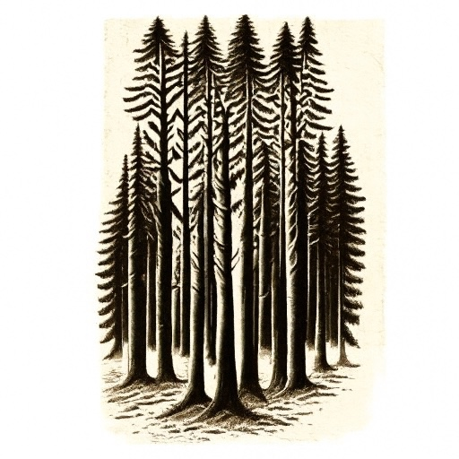
Far / low-pass: “a lithograph of an animal’s head” · Near / high-pass: “a lithograph of waves on the ocean”
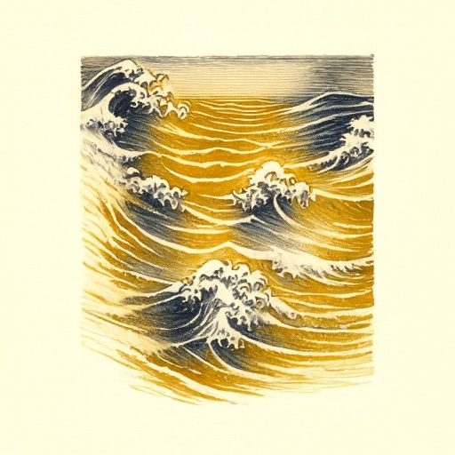
The close-up prompts come through really clearly in both, but the far-away ones are a lot weaker. Shrunk down, the forest becomes a rounded dark shape that’s roughly owl-shaped, and the waves become a yellow blob with dark patches that sort of looks like an animal’s face.
In this part, I train my own flow model on MNIST from scratch. I start by building a UNet and training it as a simple one-step denoiser, then add time conditioning so it becomes a flow matching model that can generate digits from noise, and finally add class conditioning so I can actually pick which digit it makes. I trained everything on a Tesla T4 on Colab.
As a warmup, I trained a denoiser that takes a noisy image z and maps it straight back to a clean image x, just using a plain L2 loss between its output and the clean image.
The denoiser is a UNet. All the basic blocks are a conv followed by BatchNorm and GELU: Conv is a 3x3 conv that keeps the resolution the same, DownConv is a stride-2 conv that halves it, and UpConv is a stride-2 transposed conv that doubles it. The 28x28 input gets squished down to 14x14, then 7x7, then Flatten average-pools it to 1x1, and Unflatten blows it back up to 7x7 before the decoder upsamples back to 28x28. At each resolution, I concatenate the decoder output with the encoder output from the same level (the skip connections), which helps it hold on to fine details. I used D = 128 for the hidden dimension.
To make training data, I take a clean digit x (pixels in [0, 1]) and add noise to it: z = x + sigma * epsilon. I add the noise right when each batch comes out of the dataloader, so the network sees fresh noise every epoch. Here’s one digit as sigma goes from 0.0 to 1.0:
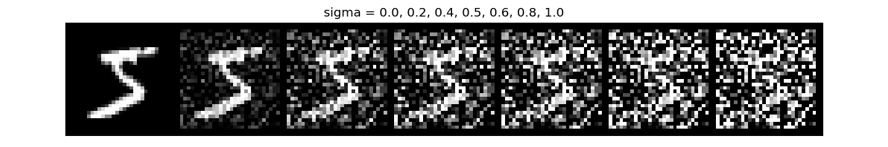
I trained it on sigma = 0.5 using the shuffled MNIST training set, with batch size 256, D = 128, and Adam at a learning rate of 1e-4 for 5 epochs. Each epoch took about a minute and a half on the T4.
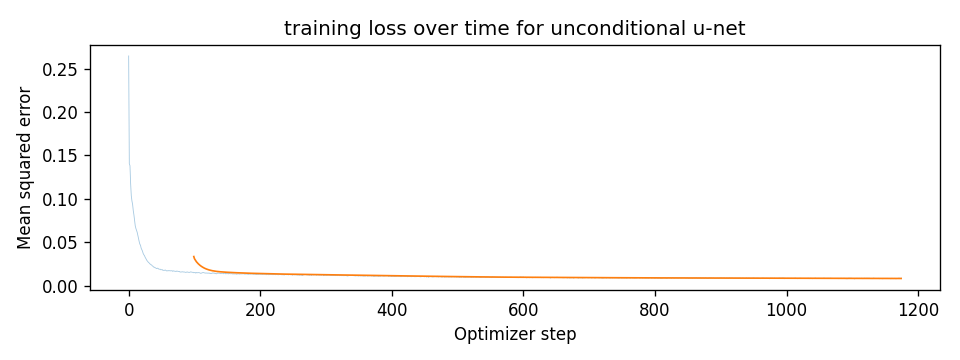
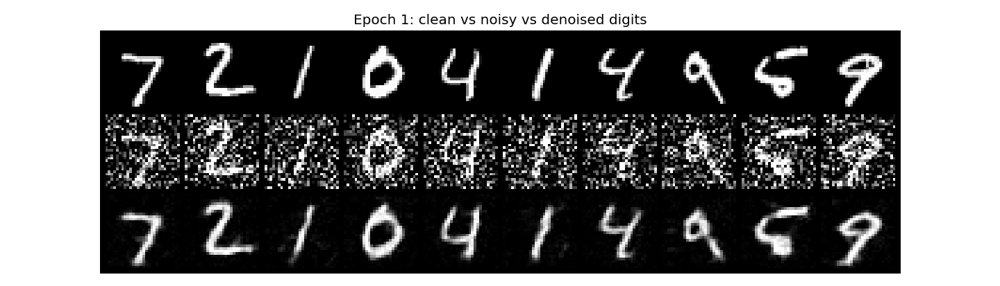
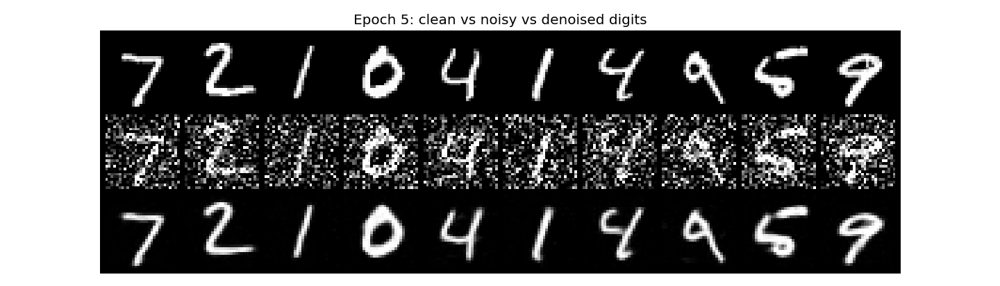
The loss drops super fast in the first ~50 steps and then just slowly creeps down. After epoch 1 the outputs are already readable, but some strokes are faint or blobby (like the 1s and the 5), and by epoch 5 they’re cleaner and sharper.
Since the denoiser only ever saw sigma = 0.5, I wanted to see how it handles noise levels it wasn’t trained on. I took 5 test digits and noised them with the same noise at sigma = 0.0, 0.2, 0.4, 0.5, 0.6, 0.8, and 1.0; each noisy row has its denoised version right under it.
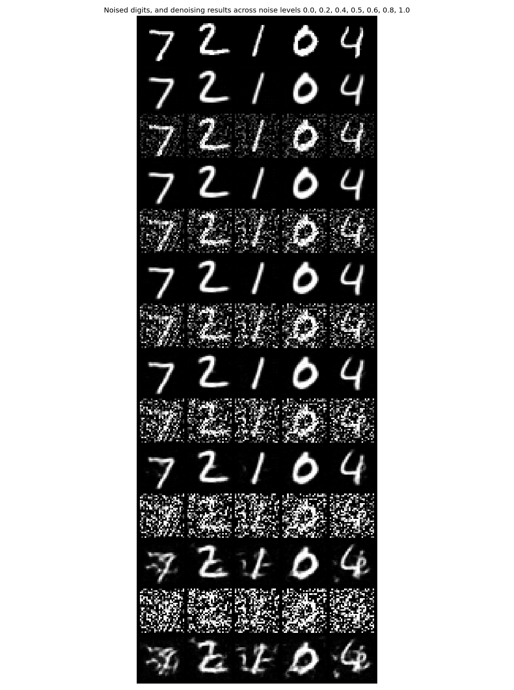
At 0.5 and below it does great, which makes sense since less noise is easier. Above 0.5 it starts falling apart: at 0.8 the strokes get broken and blotchy, and by 1.0 some digits (like the 7 and the 1) are barely recognizable.
To try to make this generative, I trained the exact same setup, except now the input is pure Gaussian noise and the target is still a clean digit.
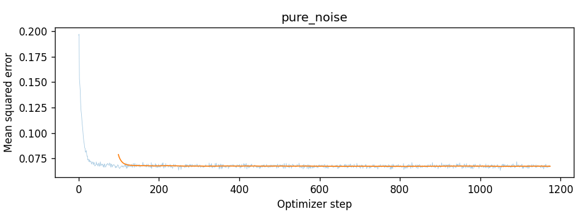
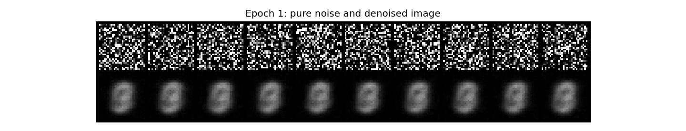
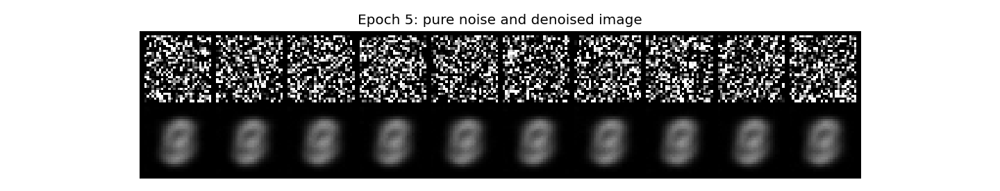
Every output looks the same no matter what noise I put in: a blurry blob that looks like a bunch of digits stacked on top of each other (you can kind of make out a 0, 3, and 8 in there). The loss also gets stuck at around 0.068. Since the input doesn’t tell the model anything about which digit it should become, the best it can do under MSE is predict the image with the smallest average squared distance to all the training images, which is just their mean (basically the centroid of the dataset). So it ends up outputting the average MNIST digit every single time.
One-step denoising clearly can’t generate new digits, since starting from pure noise all it can do is predict the average. Flow matching fixes this by denoising a little bit at a time. Just like in part A, x_t = (1 - t) * x_0 + t * x_1 is a straight line from noise to a clean image with velocity x_1 - x_0, and I train a UNet to predict that velocity with an MSE loss, with t sampled uniformly from [0, 1]. To generate, I start from noise and take small Euler steps along whatever velocity it predicts.
The UNet needs to know what time it’s at, so I pass t (which is already between 0 and 1) through two FCBlocks, which are just Linear, GELU, Linear. One of them multiplies the output of the Unflatten layer, and the other multiplies the output of the first upsampling block. One thing to keep in mind is that the network predicts the flow x_1 - x_0, not the clean image.
For each batch, I sample noise x_0 and a random t for each image, build x_t, and train the UNet to predict x_1 - x_0. I used batch size 64, D = 64, and Adam with a learning rate of 1e-2, with an exponential scheduler (gamma = 0.1^(1/10), stepped every epoch) so the learning rate drops by 10x over the 10 epochs. Each epoch only took about 38 seconds.
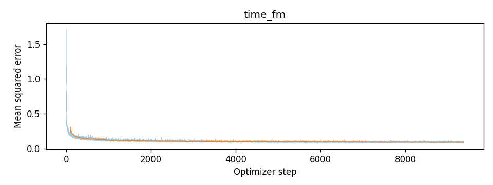
The loss starts at around 1.7, drops really fast, and then hangs around 0.1 for the rest of training. It never really gets close to zero, since the target depends on random noise that you can’t fully predict from x_t.
To sample, I start from pure noise at t = 0 and take 50 Euler steps with the predicted velocity until I hit t = 1. Here are 40 samples (same seed every time) after 1, 5, and 10 epochs:
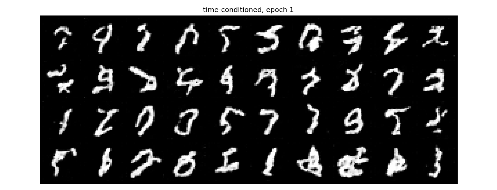
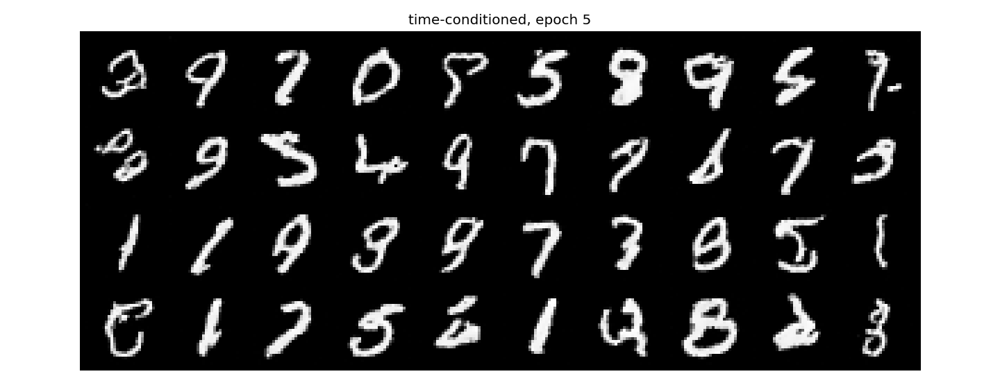
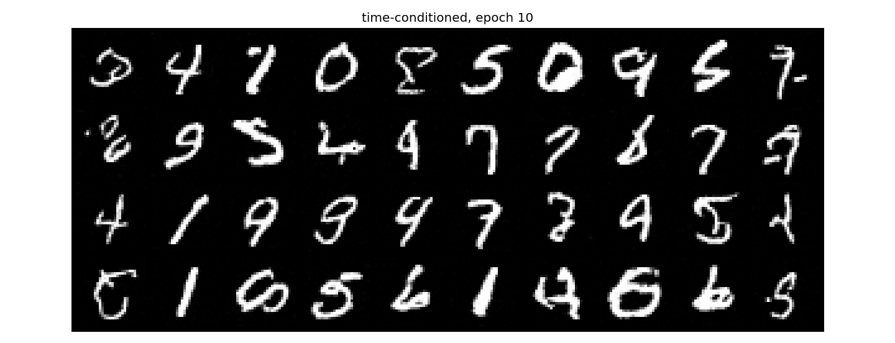
After 1 epoch the samples are mostly squiggles with a few real digits mixed in. By epoch 5 a lot more are readable, and by epoch 10 most of them look like digits, though some are still half one digit and half another, which makes sense since the model has no idea which digit it’s supposed to be making.
To get better results (and actually control which digit comes out), I also condition on the class, which is a one-hot vector over the 10 digits passed through two more FCBlocks. The class embedding scales the features and the time embedding shifts them (unflatten = c1 * unflatten + t1, and the same thing for the first upsampling block). During training I zero out the class 10% of the time, so the same network also learns to be an unconditional model, which I need for classifier-free guidance.
Training is the same as the time-only model (batch size 64, D = 64, Adam with lr 1e-2, same scheduler, 10 epochs), except now each batch also passes in its labels, with 10% of them masked out.
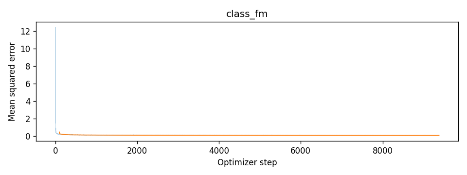
Other than a huge spike in the first couple of steps (which is why the y-axis goes all the way up to 12), it looks pretty much the same as the time-only curve.
To sample a digit, at every step I run the UNet once with the class and once with it masked out, and combine them with CFG: u_uncond + gamma * (u_cond - u_uncond), with gamma = 5 (which is a slightly different convention than part A). I used 300 Euler steps and generated 4 of each digit.
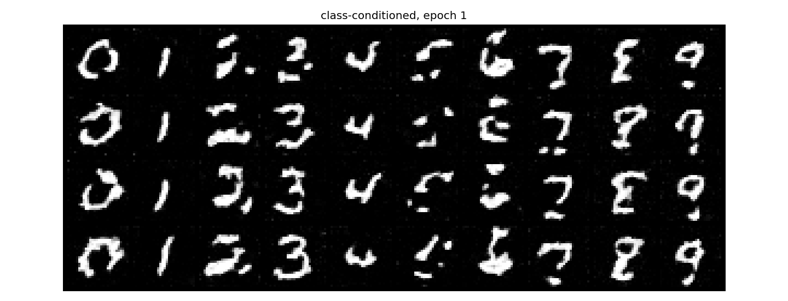
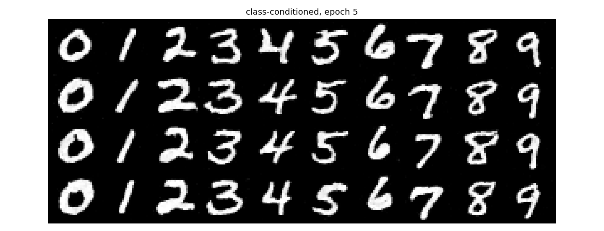
Class conditioning makes a huge difference. Even after epoch 1 you can tell what most of the digits are supposed to be, even though they’re kind of broken up and dotty, and by epoch 5 basically all 40 are clean and correct. Since the model knows the class, it doesn’t have to come up with a digit out of nowhere, and guidance pushes every sample hard toward it.
Without the scheduler the learning rate never changes, so I just went with a smaller constant learning rate: 1e-3 instead of 1e-2, which is also where the scheduler ends up after 10 epochs anyway. I kept everything else the same.
It works just as well, and honestly even better early on: the no-scheduler epoch 1 samples are already clean, while the scheduled run’s epoch 1 samples are still pretty noisy, so I think starting at 1e-2 is a bit too aggressive. By epochs 5 and 10 they look about the same.
It was really fun to make these complicated architectures like UNets and I feel like I got a lot of practice in implementing these otherwise hard to interpret models. The hardest part was, surprisingly, getting the hybrid and the visual anagram pictures to work, which were among some of the simplest things to implement.